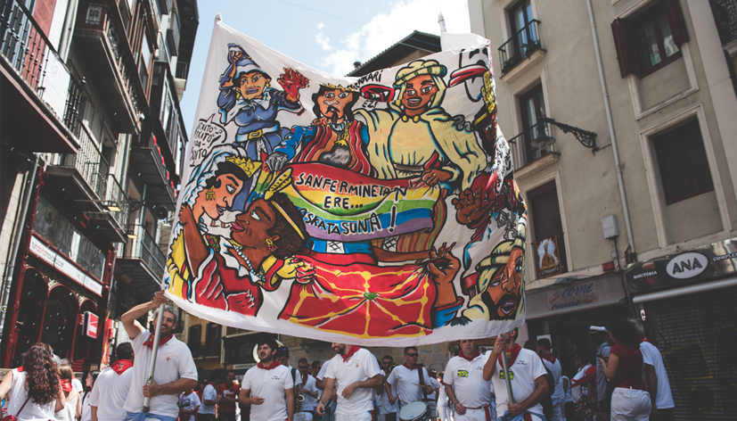

Balcones privados, vistas privilegiadas y experiencias diseñadas para quienes buscan algo más.
Vive el momento más emocionante desde una posición privilegiada.
Disfruta del inicio de la fiesta desde un balcón exclusivo.
Vive el momento más especial de las fiestas desde la altura.
El cierre más emotivo desde una ubicación única.
Nuestros personajes más queridos desde arriba.
Disfruta de esos momentos pamplonicas al alcance de muy pocos.
SAN FERMÍN
Durante nueve días, Pamplona se transforma en un escenario único donde tradición, intensidad y cultura se entrelazan en cada rincón. Desde el primer chupinazo hasta el último "Pobre de mí", cada instante se convierte en un recuerdo irrepetible.
San Fermín se vive una vez... y luego se repite.
